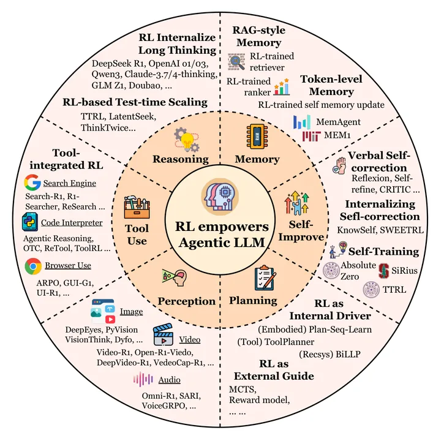
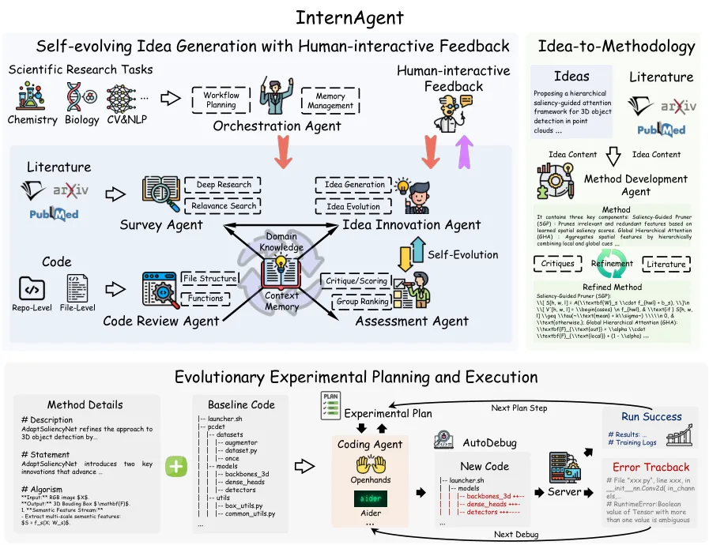
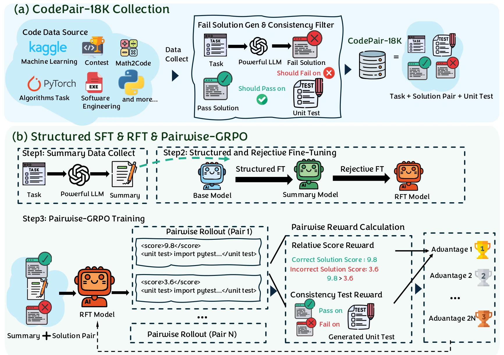
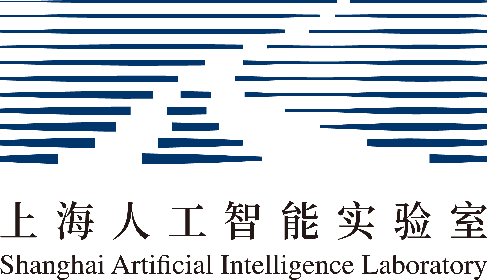

Sage-A1.5: From Long-Horizon Execution to Scientific Exploration with Capability Composition
Sage-A1.5 是一个 35B 混合专家模型，将子任务分派给上下文隔离的子智能体并行执行，并通过进度检查和证据验证修正搜索策略。启用子智能体编排后，同一模型的 DeepResearch Bench II 得分从 43.7 升至 47.5，BrowseComp 准确率从 81.7% 升至 82.8%。
你好，欢迎来到我的学术主页！我是复旦大学二年级博士生，导师是 Wanli Ouyang。我有幸在上海人工智能实验室开展研究，并与 Shiyang Feng 和 Bo Zhang 密切合作。
我目前感兴趣的是探索如何提升智能体在长程任务中的表现，尤其是 Work Agent 等能够为现实工作带来生产力提升的应用方向。我也关注智能体与训练环境的递归自我改进（RSI），探索二者如何在持续迭代中相互促进。

浅黄色为第一作者论文。完整列表见 Google Scholar。
Sage-A1.5 是一个 35B 混合专家模型，将子任务分派给上下文隔离的子智能体并行执行，并通过进度检查和证据验证修正搜索策略。启用子智能体编排后，同一模型的 DeepResearch Bench II 得分从 43.7 升至 47.5，BrowseComp 准确率从 81.7% 升至 82.8%。

LongHarness 面向超出模型上下文窗口的语料级推理，将检索得到的证据和不断修订的结论作为显式状态维护。结论中的证据缺口引导后续检索，新证据反过来补强或修正结论，证据生命周期管理则让更新可追溯。使用同一 GLM-5.3-Flash 模型时，LongHarness 在 OfficeQA Pro V1 和 V2 上的精确匹配率分别为 60.2% 和 61.1%，高于 Codex 的 46.6% 和 42.2%，以及 Claude Code 的 48.1% 和 35.6%。

Agents-A1 是一个 35B 混合专家模型，使用平均 45K token 的长程交互轨迹训练，并通过按领域路由的多教师在策略蒸馏，将六个领域的专长整合到同一个模型中。在 IFBench 上，Agents-A1 得 80.6 分，Kimi-K2.6 得 71.8 分，DeepSeek-V4-Pro（Max）得 73.5 分。

Sci-CoE 面向缺乏可验证反馈的科学推理任务，先用少量标注建立验证器的判断基础，再以兼顾共识、可靠性和多样性的几何奖励，在无标注数据上联合训练求解器与验证器。在论文 v2 的 GPQA-Diamond 评测中，Qwen3-8B 经第二阶段训练后，准确率从 61.62% 升至 65.66%。

InternAgent-1.5 将生成、验证与演化组织成三个协同子系统，以深度调研、方案优化和长程记忆支持持续迭代。在 SGI-Bench 的 Deep Research 任务上，搭载 Gemini-3-Pro 和 o4-mini 的 InternAgent-1.5 得分为 37.74%，单独使用 Gemini-3-Pro 的对照为 18.48%。

这篇综述以部分可观测马尔可夫决策过程刻画大模型智能体的多步交互，并按核心能力与应用领域两个维度梳理 500 余项研究。文章覆盖规划、工具调用、记忆和自我改进等能力，并汇总开源环境、基准和训练框架。

InternAgent 是一个连接研究假设、方法设计与实验验证的闭环多智能体框架，允许领域专家在端到端流程中提供反馈。论文评估了 12 类科研任务，其中二维语义分割任务 Auto2DSeg 的最佳方案将 DeepLabV3+ 基线的 mIoU 从 78.8% 提高到 81.0%。

RewardCode 将基于准则的评分与可执行单元测试结合，用 CodePair-18K 中的代码偏好对和单元测试训练通用代码奖励模型，并用 Pairwise-GRPO 联合优化评分与测试生成。在 RewardBench-Code 上，RewardCode-7B 的偏好选择准确率为 94.9%，RM-R1-Qwen2.5-Inst-7B 为 88.8%。

TimeKAN 以级联分解提取各频带的表示，用多阶 Kolmogorov–Arnold 网络分别建模，再融合各频带的预测。在 ETTh1 上，对 96、192、336 和 720 步预测取平均，TimeKAN 的 MSE 为 0.417，MAE 为 0.427，TimeMixer 的对应数值为 0.459 和 0.444。

Research Intern · Agent System Center
至今